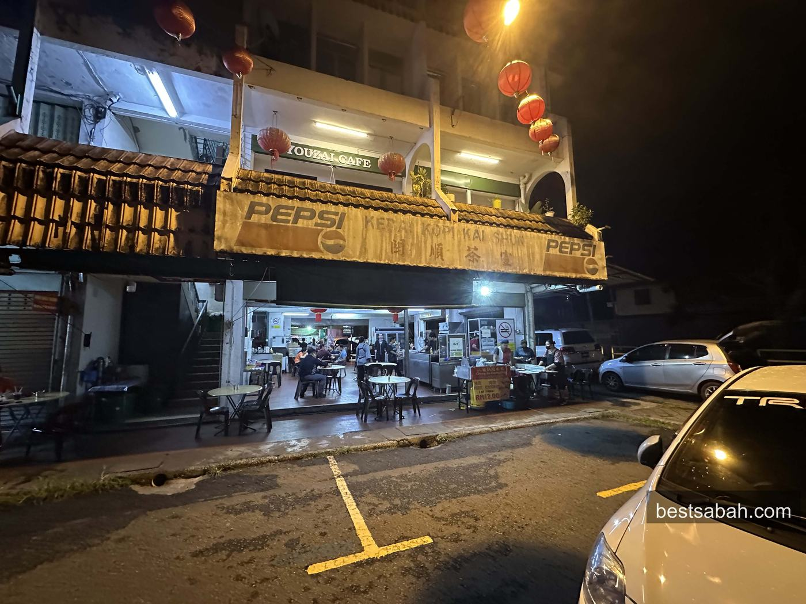
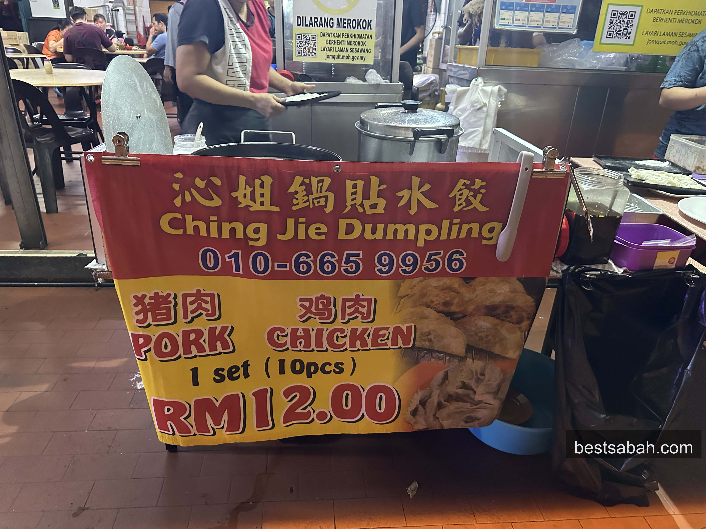
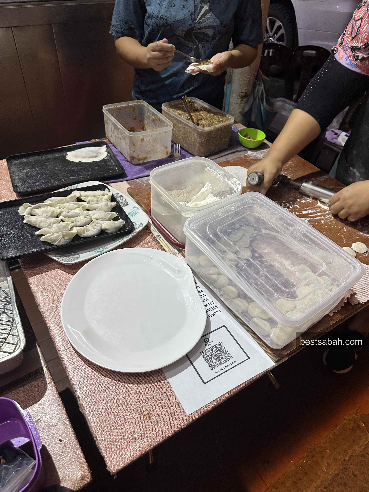
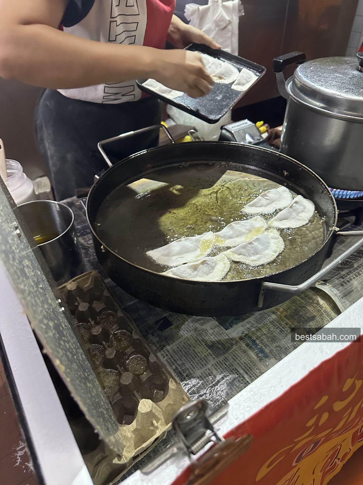
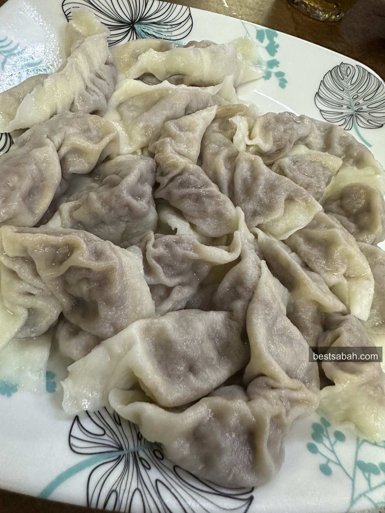
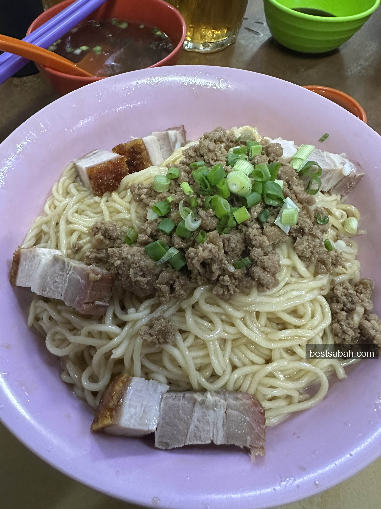
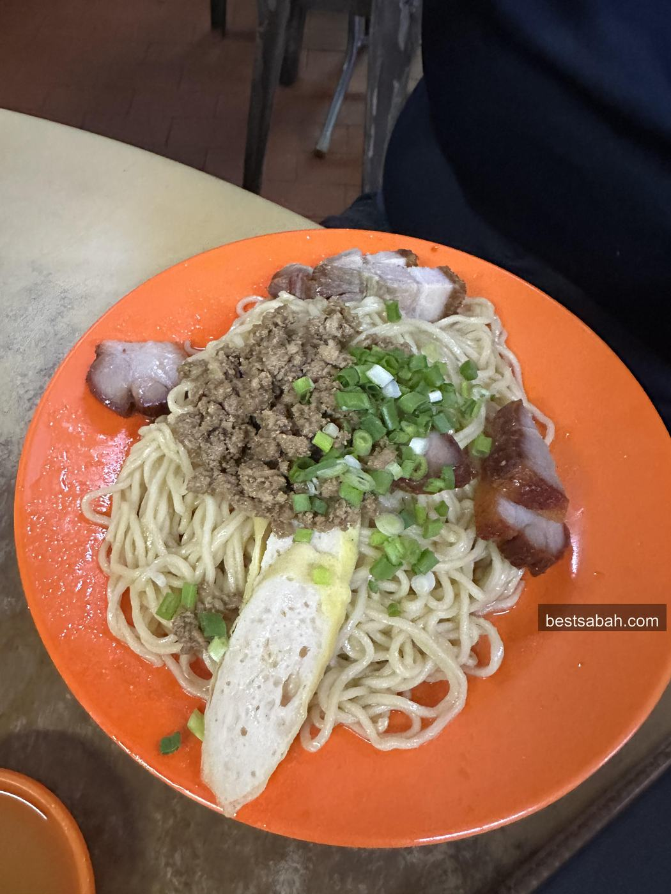
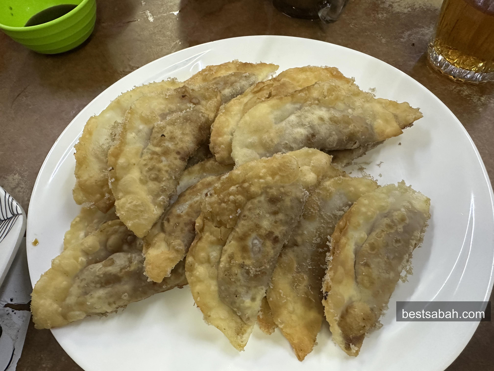

June 2026
The Best Guo Tie and Dumplings in Kota Kinabalu: Ching Jie, Foh Sang
Crispy wrapper, juicy pork, hand-wrapped and fried to order. Ching Jie Dumpling in Foh Sang is one of the best guo tie I have ever had. RM12 for ten.

Kedai Kopi Kai Shun in Foh Sang. The dumpling stall is inside.
What is Guo Tie
So what is guo tie? Also known as potstickers, or gyoza. Basically little pork dumplings, pan-fried until the bottom goes crispy.
There are versions of it everywhere. And it just so happens we have one of the best ones right here in Kota Kinabalu. Not kidding.
The Best One: Ching Jie Dumpling
The best guo tie in my opinion is Ching Jie Dumpling in Foh Sang. A small stall tucked inside Kedai Kopi Kai Shun.

Ching Jie Dumpling. RM12 a set, 10 pieces. Pork or chicken.
Man, how do I even start. The wrapper is crispy, like proper crispy. The meat inside is tender, juicy, super flavourful. If you happen to be visiting Sabah, you gotta come here.
This place is not touristy at all. Only locals come. Probably because it is not exactly near the city center. So if you are visiting, you might have to take a Grab or a taxi out here. Worth it.
Made Fresh, Fried to Order

Wrapped by hand at the cart. You can watch the whole thing.
The dumplings are folded right there at the cart. Fresh skin, fresh filling. Then they go into a big flat pan of oil.

Into the pan. This is where the crispy bottom comes from.
That is where the crisp comes from. Nothing reheated, nothing from a frozen bag. You order, then it gets fried. So you wait a bit. That is the whole point.
Fried or Boiled
There are two versions. The dumplings, which are boiled. And the guo tie, which are fried.

The guo tie. Fresh out the pan. Eat them hot.

The boiled version. Same filling, softer skin.
Personally, the guo tie is much better. The crispy skin makes it. If it is your first time, get the fried.
They serve it with a mix of vinegar and garlic sauce. But I always eat mine as it is. The filling has enough going on already.
Get the Kon Lao Mee Too
This place also has some delicious kon lao mee. Springy dry noodles, served with char siu, sau nyuk (roast pork), minced pork and spring roll. Foh Sang is Foochow country, so this is the real deal.

Kon lao mee, the dry tossed noodles. Comes with a bowl of soup on the side.

The campur version. Everything on one plate.
So here is what you order. Kon lao mee campur, and maybe 20 guo tie per person. Feels like you are in heaven.

20 a person sounds like a lot. It is not.
Again, plenty of places sell guo tie, and some of them taste pretty good. But no one does it like this place.
Practical Info
Stall: Ching Jie Dumpling, inside Kedai Kopi Kai Shun
Address: Jalan Maktab, Taman Foh Sang, Luyang, 88300 Kota Kinabalu, Sabah
Price: RM12 per set of 10 pieces, pork or chicken
Phone: 010-665 9956
Hours: The noodles run from morning till night. The dumplings only start in the late afternoon, so call or text first if you are not sure
Payment: Cash or QR bank transfer
Me and my friends all love eating here. If you want to find something the locals love, this is it.
Take the Grab out to Foh Sang, order the kon lao mee campur, then put away a stack of guo tie while they are still hot. That is the move.
Want more Kota Kinabalu food worth the drive? Try Yu Kee bak kut teh on Jalan Gaya or Yii Siang beef noodle in Inanam.